TUBU-GO!!

真響電機の主力製品である「TUBE-GO!!」は、ポータブル真空管アンプ「XM-10」シリーズをベースに再設計された、新しいスタイルのオーディオ製品です。 プロダクトデザイナーのtueks氏、構造監督のゲニカク氏との協力により、優れた音質と携帯性、そして生活空間に溶け込むデザインを実現しました。 旅先で、通勤で、あるいはお気に入りの場所で。「TUBE-GO!!」は真空管ならではの豊かな音色を、より身近に楽しむためのパートナーです。 あなたも真空管とともに、新しい旅へ出かけてみませんか。
高性能DAC搭載！スマホ・PCとUSB-Cケーブル１本で接続！ヘッドホンを接続するだけで使用できます！
￥59,800
秋葉原ラジオデパート サンエイ電機でも販売中です！！
現在納期1か月です。
ご購入はこちら
注意！！本製品にはACアダプタ・ヘッドホンは付属しておりません。USB電源5V or 単三電池4本での給電になります。
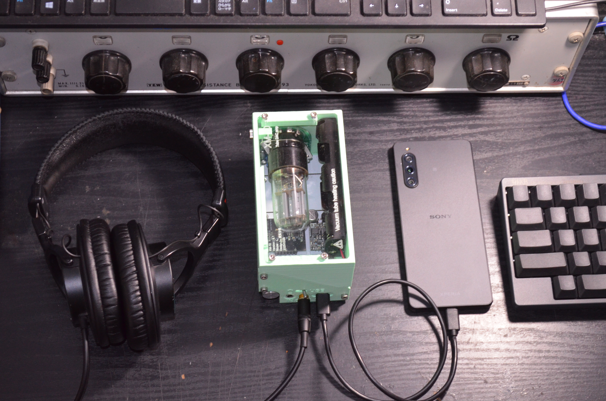
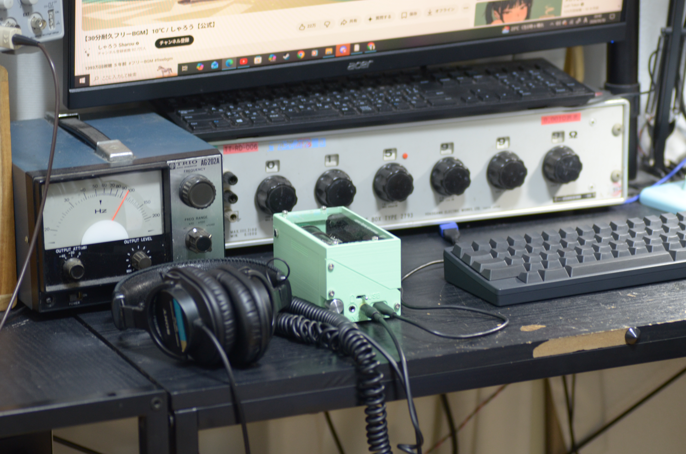
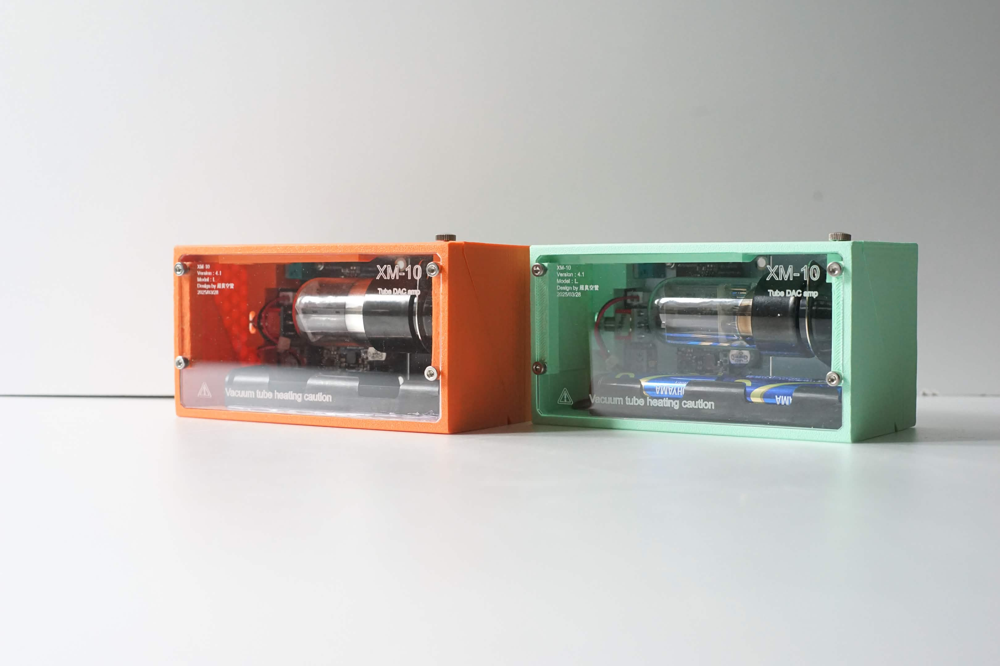
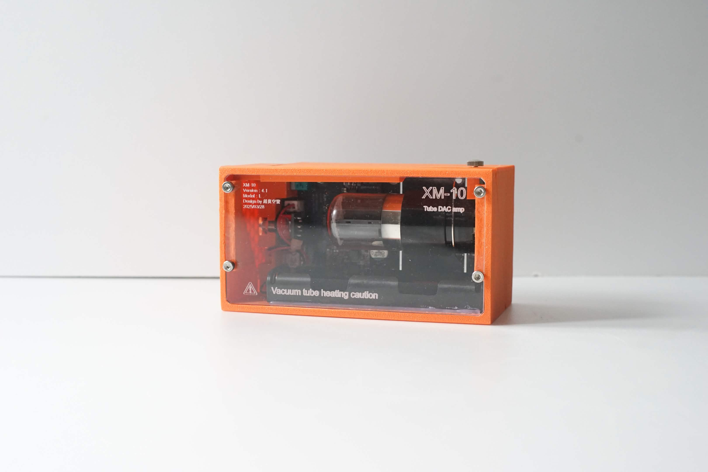
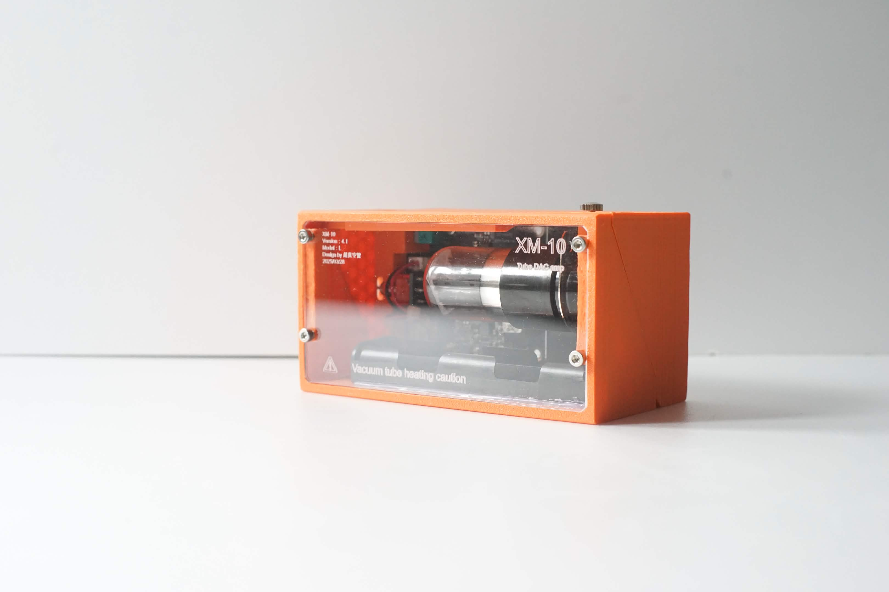
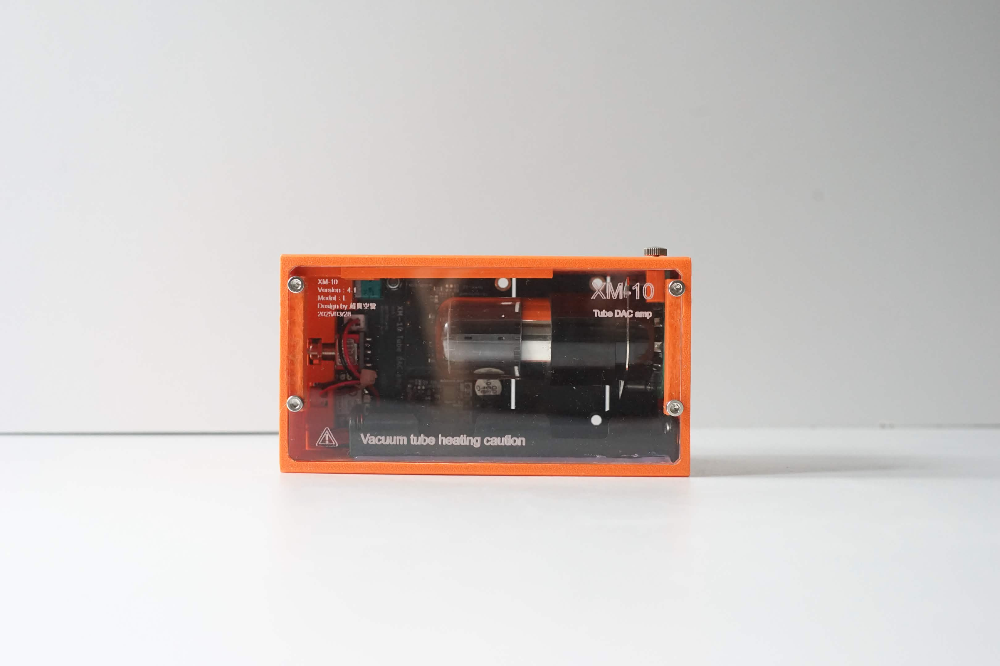
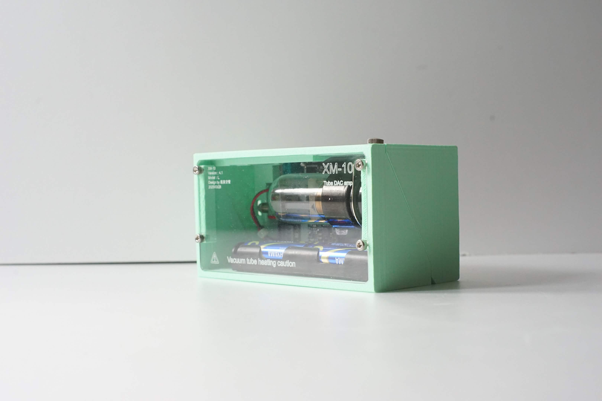
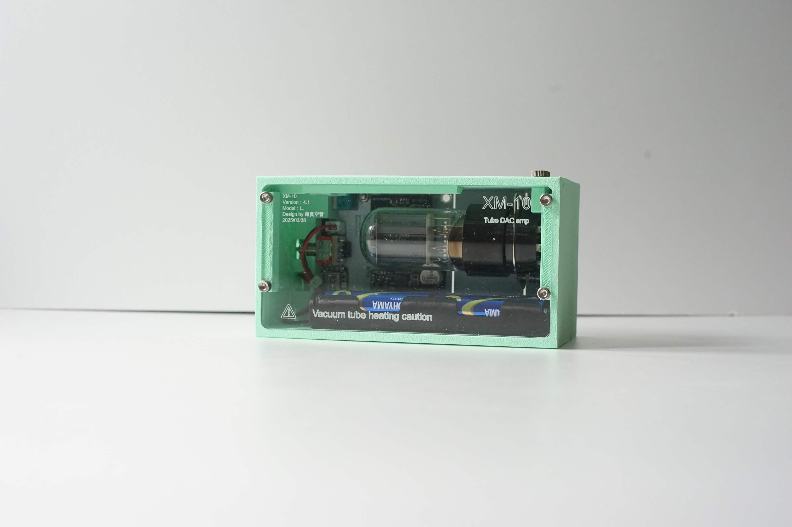
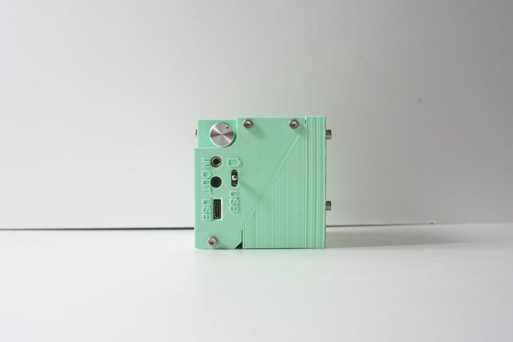
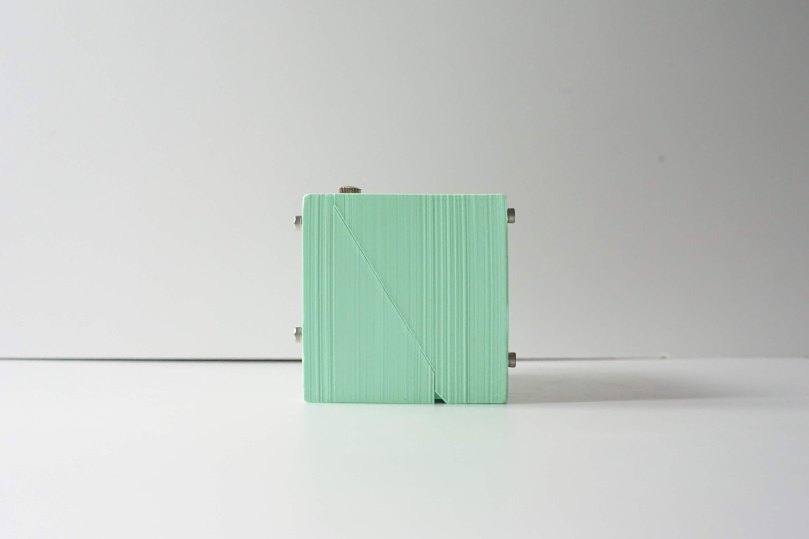
製品スペック
工具不要で３ステップで真空管を交換できます！
さまざまなヘッドホンに対応
高インピーダンスヘッドホンとの優れた相性
電源
型式番号
信号入力
DAC性能
対応OS
動作確認済端末
1.ケースを開ける
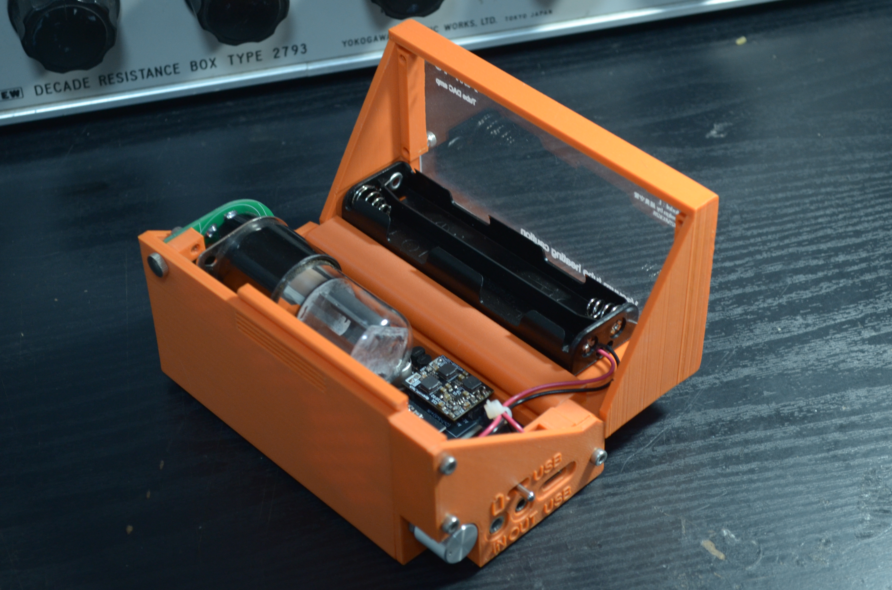
2.真空管固定ねじを回す
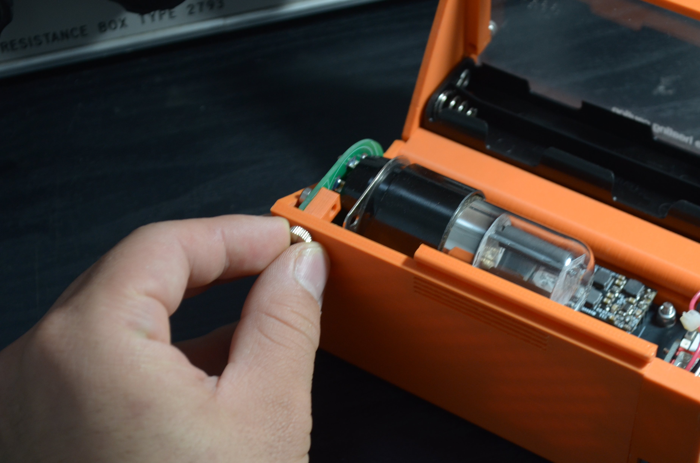
3.任意の真空管を装着
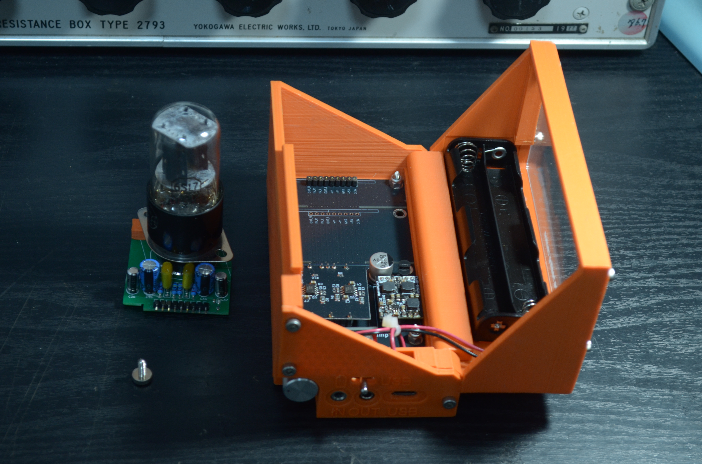
工場出荷状態では、ロシア製6H8Cが付属しております。
真空管は6H8C・6SN7・6SL7に対応しております。 また、別売りの真空管バスカードMT管モデルを使用することで以下のMT管も使用できます。
12V管：12BH7A、12AT7、12AU7、12AX7、12AV7、5965
6V管：6FQ7、6CG7、6GU7、6EV7、6BQ7、6DJ8、6R-HH2、6R-HH8
真空管バスカードMT管モデル
XM-10は16Ωのイヤホンから300Ωクラスの高インピーダンスヘッドホンまで実測評価を実施しています。 32Ω負荷から300Ω負荷まで、可聴帯域（20Hz～20kHz）において概ね±1dB以内の優れた周波数特性を実現しました。
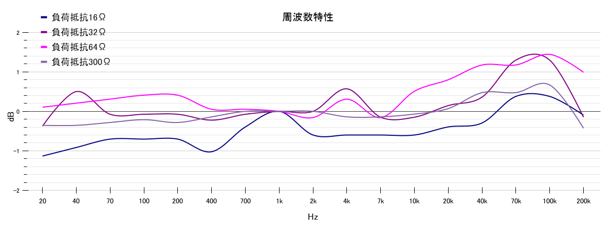
近年主流の32Ωヘッドホンはもちろん、
・64Ω
・120Ω
・250Ω
・300Ω
といった本格的なモニターヘッドホンやオーディオ用ヘッドホンにも対応しています。 高インピーダンス負荷では最大5Vpp以上の出力を実現し、真空管ならではの余裕あるドライブ性能を発揮します。
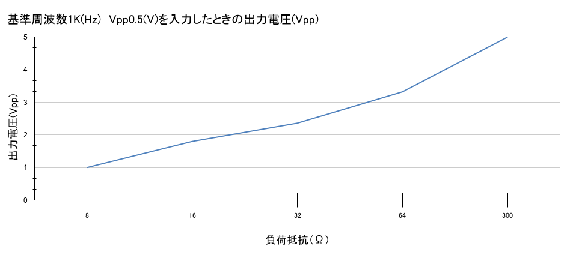
USB電源5V 1A or 単三電池4本6V 1A
XM-10-T-1.0
USBTypeC or 3.5mmアナログジャック
44.1kHz 16bit(CD音源) アップコンバート機能で384kHz 32bitで出力
対応OS: linux, windows, iOS, Android
iPhone15, iPhone14pro, iPhoneSE2, iPadAir4, OPPO A54 5G,NOTHING(2A)
CREDIT
CREDIT
電源開発・プログラミング：やすし
筐体デザイン：tueks
構造監督：ゲニカク
本体開発・企画・設計：真響電機